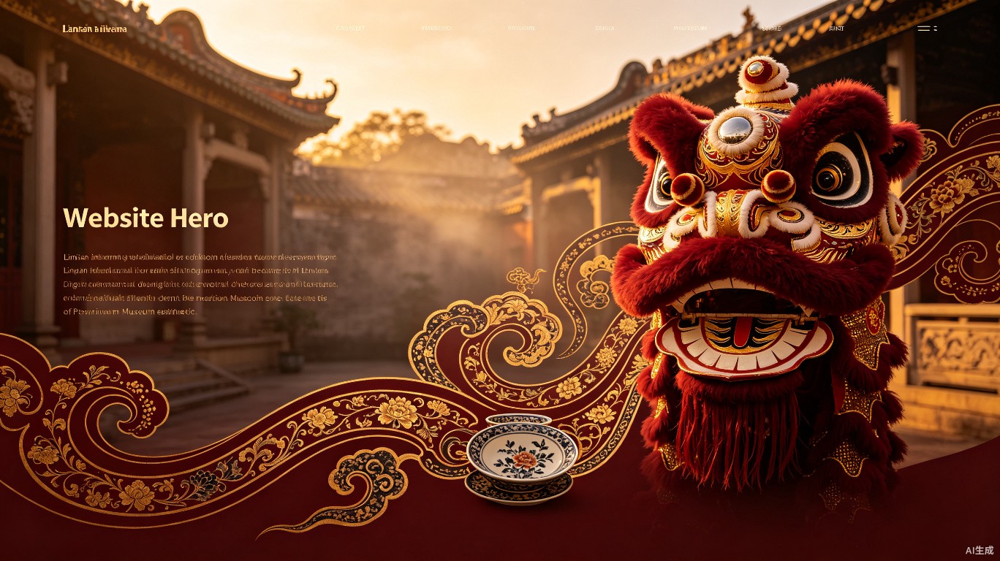
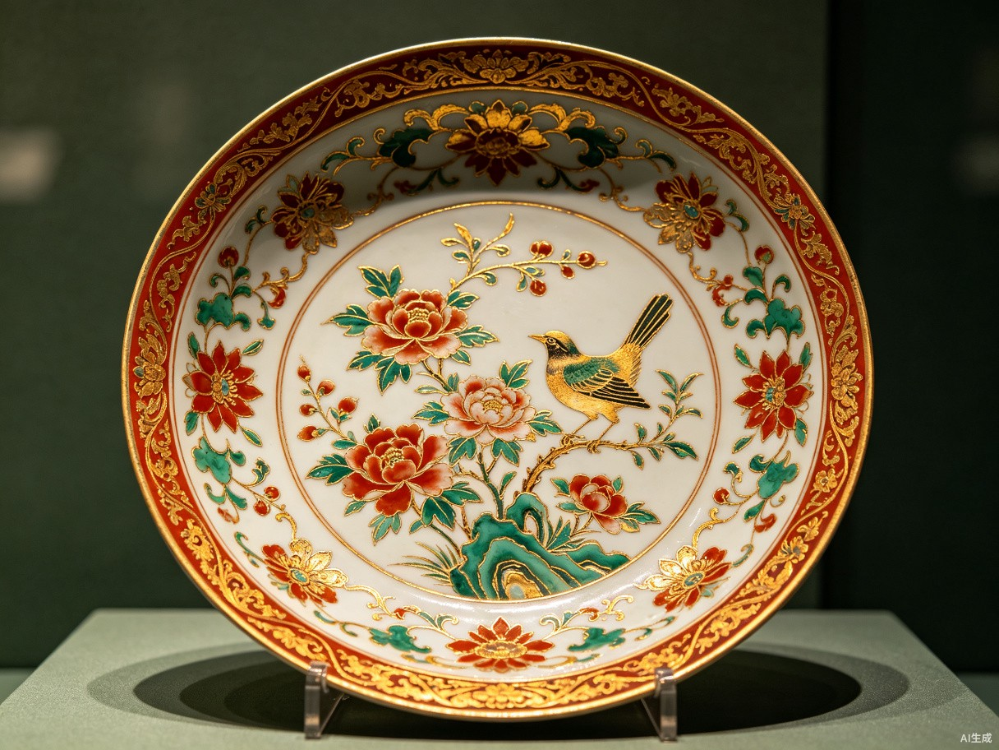
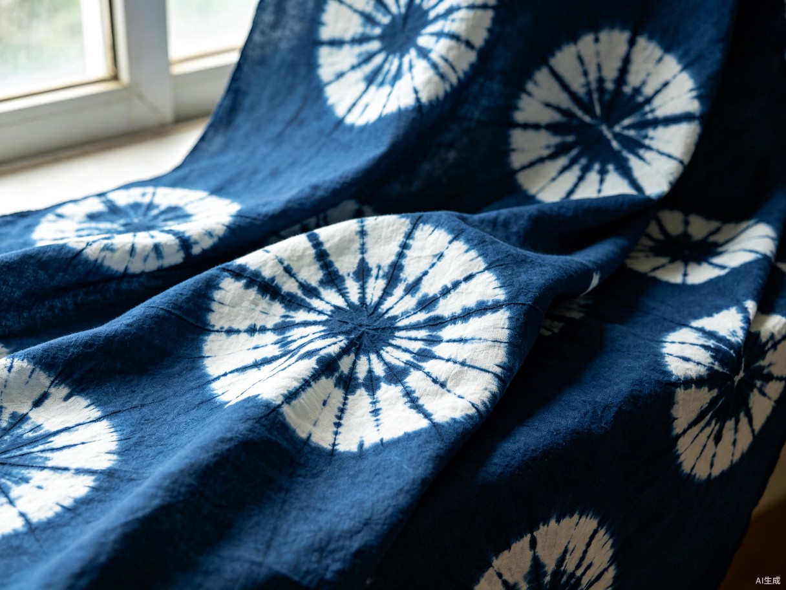
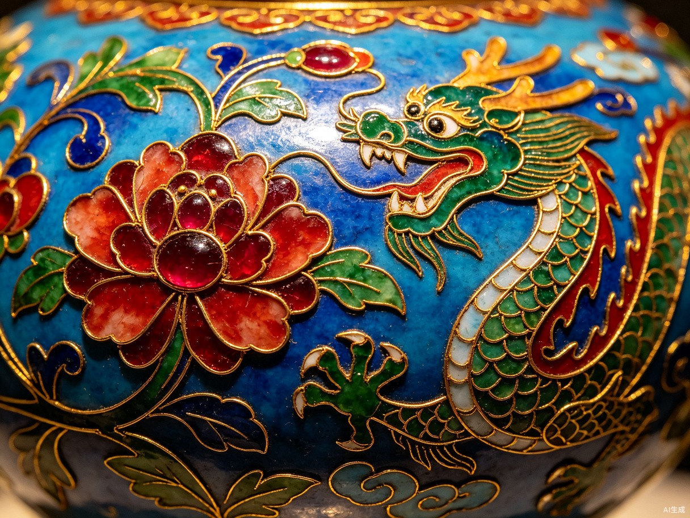

当下中小学生非遗研学普遍存在一次性体验、记忆留存弱、缺乏持续参与动力的问题。体验结束便无后续沉淀，难以形成长效学习成果。
传统非遗研学仅停留在单次体验层面，活动结束后无后续学习跟踪与成果记录，学生学完即忘。
学生参与积极性参差不齐，缺乏持续探索非遗文化的内在驱动力，难以形成长期学习习惯。
研学成果无法系统化留存，学生缺少可用于综合素质评价、评优展示的官方成长素材。
走过 · 看过 · 忘过 —— 这是非遗研学最真实的写照
从体验、核验到积累、展示，构建完整的非遗研学成长链路，让每一次学习都有迹可循。
学生上传非遗作品后，AI自动识别工艺特征、完成度与创意表达，给出智能评分与个性化反馈，替代人工逐一审阅，大幅提升核验效率。
作品识别 · 智能评分将广彩、醒狮、扎染、掐丝珐琅等岭南非遗项目设计为层层递进的闯关任务，每完成一项研学体验即解锁对应关卡，以游戏机制激发探索欲望。
关卡进阶 · 任务驱动完成闯关、提交作品、参与互动均可获得积分，累积解锁专属非遗勋章与成就等级，让学生在收集与成就中持续投入，形成正向激励循环。
积分体系 · 成就系统系统自动汇聚学生的研学记录、作品成果、勋章成就，一键生成标准化成长档案，可直接用于综合素质评价与评优展示，省去繁琐整理流程。
自动归档 · 一键导出精选最具代表性的岭南非物质文化遗产项目，每一项都是一段跨越时空的文化对话。



从线下体验到线上沉淀，每一个环节都让非遗学习更加立体、可追溯。
参与广彩、醒狮等非遗研学活动
拍照上传研学作品至平台
智能识别评分，解锁对应关卡
获得积分，累积成就与专属勋章
自动归档，一键导出成长档案
永庆坊位于广州荔湾区恩宁路历史文化街区，是岭南非遗文化的活态博物馆。沿青石板路漫步，一站式体验广彩、广绣、醒狮、粤剧等非遗精粹，完成线下闯关打卡。点击地图标记查看各站点详情。
岭南园林式博物馆，展示粤剧戏服、头饰、乐器与经典剧目。可体验粤剧脸谱绘制，感受"南国红豆"的独特魅力。
走进广彩匠人的工作台，观看织金彩瓷的手绘全过程。亲手在瓷盘上描金勾线，完成属于自己的广彩小品。
南狮发源地之一，近距离接触扎作狮头工艺，学习基本步法与鼓乐配合。举起狮头完成一组"采青"动作。
广绣以色彩绚丽、构图饱满著称。在传承人指导下体验基本针法，绣制一朵岭南木棉花。
岭南三雕两塑的精华所在，观摩象牙球层层镂刻技艺，体验木雕基础打磨，理解匠人精神。
恩宁路"打铜街"百年传承的手工打铜技艺，听老匠人讲述一锤一打间的温度与节奏，亲手敲制铜牌书签。
不止于一次体验，而是将非遗文化融入青少年的成长轨迹，产生持续的社会价值。
将碎片化的非遗单次体验转化为系统化、可持续的成长过程，通过AI打分、勋章解锁、档案生成的闭环机制，激发学生自主学习非遗文化的积极性。
创新非遗文化传播与美育教学模式，打通校园研学与日常兴趣学习的壁垒，让岭南非遗文化以年轻化、趣味化的形式扎根青少年群体。
覆盖非遗研学的完整生态，连接学生、教师与研学机构。
在游戏化闯关中获得成就感，让非遗学习从被动体验变为主动探索，积累属于自己的文化成长档案。
主要使用者负责非遗美育教学的老师可借助平台跟踪学生研学进度，一键获取班级成果统计，告别手工整理的低效流程。
教学管理研学机构从业者可借助平台延伸服务链路，将单次活动转化为持续学习关系，提升课程附加值与用户粘性。
生态合作